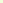

Améliorer votre vitesse (6 leçons)
Concentrez-vous sur votre vitesse en tapant des mots courants et des textes plus longs.
Cours sur les chiffres (2 leçons)
Apprenez la technique dactylographique d'utilisation de la rangée des chiffres.
Cours sur les signes spéciaux (4 leçons)
Apprenez la technique dactylographique d'utilisation des signes spéciaux.
Cours sur le pavé numérique (3 leçons)
Apprenez la technique dactylographique d'utilisation des 10 touches du pavé.
Vous pouvez commencer n'importe lequel de ces cours une fois sortit de celui-ci.